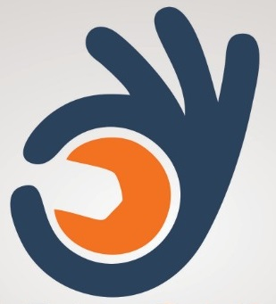

<ion-app>
  <ion-menu side="start" menuId="first" contentId="content1">
    <ion-header class="ion-no-border">
      <ion-toolbar style="height: 160px;background-color: #7a5b51 !important;margin:0px important;">
          <ion-card style="margin: 0px !important;">
            <ion-card-content style="text-align: center;background-color: #e6dfdd !important;height: 100% !important;">
              
              
              <div style="font-size:23px;font-weight:800;margin-top:5px;">
                <span style="color:#2a425c;">SHOP</span>   
                <span style="color:#f37221;"> SEVA</span>
              </div>

             <div style="font-size:18px;color:black;"> {{ 'mainpage.welcome' | translate }}</div>
            </ion-card-content>
          </ion-card>
        
      </ion-toolbar>
    </ion-header>
    <ion-content style="margin:0px important;">


      

      <ion-list>
      <ion-menu-toggle auto-hide="true">


        <ion-item lines="none"  routerLink="news" replaceUrl="true" routerDirection="forward">
          <ion-label  class="customefontcolor">
              
            {{ 'mainpage.icon6' | translate }}
          </ion-label>
          <ion-icon style="font-size: 24px;color:#2a425c;" mode="ios" name="earth" slot="start"></ion-icon>
        </ion-item>

        <ion-item lines="none"  routerLink="home" replaceUrl="true" routerDirection="forward">
          <ion-label  class="customefontcolor">
              
            {{ 'mainpage.icon1' | translate }}
          </ion-label>
          <ion-icon style="font-size: 24px;color:#2a425c;" mode="ios" name="cart" slot="start"></ion-icon>
        </ion-item>

       

        <ion-item  lines="none" routerLink="employeeservice" replaceUrl="true" routerDirection="forward">
          <ion-label  class="customefontcolor">
            
            {{ 'mainpage.icon2' | translate }}
          </ion-label>
          <ion-icon style="font-size: 24px !important;color:#2a425c;" mode="ios" name="build" slot="start"></ion-icon> 
        </ion-item>
    
       
        <ion-item  lines="none" routerLink="setting" replaceUrl="true" routerDirection="forward">
          <ion-label  class="customefontcolor">
            
             
            {{ 'mainpage.icon4' | translate }}
          </ion-label>
          <ion-icon  style="font-size: 24px !important;color:#2a425c;" mode="ios" name="settings-sharp" slot="start"></ion-icon>
        </ion-item>

        <ion-item  lines="none" (click)="logoutfunction()">
          <ion-label  class="customefontcolor">
            
             
            {{ 'mainpage.icon5' | translate }}
          </ion-label>
          <ion-icon  style="font-size: 24px !important;color:#2a425c;" mode="ios" name="lock-closed" slot="start"></ion-icon>
        </ion-item>

      
     

      </ion-menu-toggle>
      </ion-list>
    </ion-content>
  </ion-menu>
  <ion-router-outlet id="content1"></ion-router-outlet>
</ion-app>
